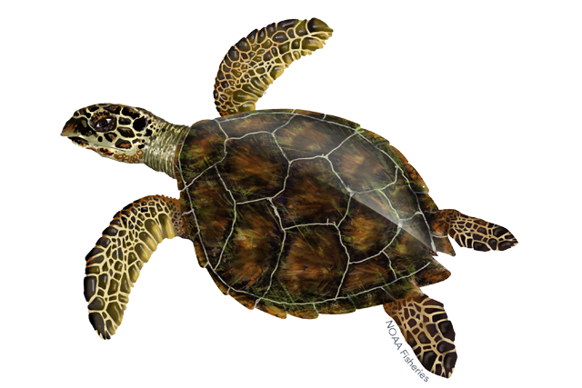

Google has recently made their newest family of multimodal LLMs available via an API with a generous free tier. Google also released SDKs in several popular programming languages, including Go.
This post is a quick overview of how to get started with the Go SDK to ask the model questions that mix text with images.
The task
We'll be asking the model to explain the difference between two images of turtles; this one:
And this one:
Using the Google AI SDK
With the Google AI SDK, all you need to access the model is generate an API key (similarly to how it works with OpenAI's API). The Go SDK lives at https://github.com/google/generative-ai-go, with package documentation at https://pkg.go.dev/github.com/google/generative-ai-go; it has a good section of examples we can follow.
Here's the code for our task:
package main
import (
"context"
"encoding/json"
"fmt"
"log"
"os"
"github.com/google/generative-ai-go/genai"
"google.golang.org/api/option"
)
func main() {
ctx := context.Background()
client, err := genai.NewClient(ctx, option.WithAPIKey(os.Getenv("API_KEY")))
if err != nil {
log.Fatal(err)
}
defer client.Close()
model := client.GenerativeModel("gemini-pro-vision")
imgData1, err := os.ReadFile("../images/turtle1.png")
if err != nil {
log.Fatal(err)
}
imgData2, err := os.ReadFile("../images/turtle2.png")
if err != nil {
log.Fatal(err)
}
prompt := []genai.Part{
genai.ImageData("png", imgData1),
genai.ImageData("png", imgData2),
genai.Text("Describe the difference between these two pictures, with scientific detail"),
}
resp, err := model.GenerateContent(ctx, prompt...)
if err != nil {
log.Fatal(err)
}
bs, _ := json.MarshalIndent(resp, "", " ")
fmt.Println(string(bs))
}
Since the LLM API is multimodal, the SDK provides helper types like genai.ImageData and genai.Text to wrap inputs in a type-safe way. When we run this sample, we get the model's response dumped as a JSON object. The important part is:
"Content": {
"Parts": [
"The first picture is of a tortoise, which is a reptile characterized by
its hard shell. The second picture is of a sea turtle, which is a reptile
characterized by its flippers and streamlined shell. Tortoises are
terrestrial animals, while sea turtles are marine animals. Tortoises have
a domed shell, while sea turtles have a flattened shell. Tortoises have
thick, scaly skin, while sea turtles have smooth, leathery skin. Tortoises
have short legs with claws, while sea turtles have long flippers.
Tortoises have a slow metabolism and can live for over 100 years, while
sea turtles have a faster metabolism and typically live for around 50
years."
],
"Role": "model"
},
OK, so now we know :-)
Using the GCP Vertex SDK
If you're a GCP customer and have your GCP project set up with billing and everything else, you may want to use the Vertex Go SDK instead.
The great thing about how the Go SDKs work is that you barely have to change your code at all! The only changes are the import line, from:
"github.com/google/generative-ai-go/genai"
To:
"cloud.google.com/go/vertexai/genai"
And then change how you create the client, since the auth is different. For Vertex, the client should be created like this:
client, err := genai.NewClient(ctx, os.Getenv("GCP_PROJECT_ID"), "us-central1")
Where GCP_PROJECT_ID is an env var with your GCP project and the location/region can be set based on your preferences. The rest of the code remains exactly the same!
There are two SDKs because the features offered by the two products can differ in some cases. For example, the GCP one may allow you to read data directly from your storage buckets or database tables.
Code
The full code for all the samples in this post - along with the sample images - is available on GitHub.
Update 2024-01-31: see this post about accessing the Gemini models via langchaingo.